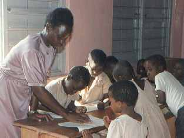
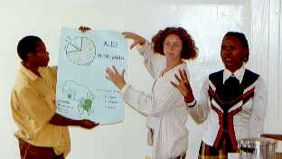
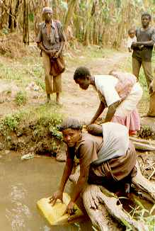

|
Over Kibaale Children's Centre
In het zuiden van Uganda is AIDS hard toegeslagen. Tien tot dertig procent
van de bevolking is geïnfecteerd met HIV
(referentie: UNAIDS).
Omdat ouders sterven aan deze
dodelijke ziekte zijn er erg veel weeskinderen. Canadese missionarissen
onderkenden de behoefte, en hebben een centrum opgezet om deze kinderen te
helpen.
Momenteel worden er ongeveer 700 kinderen geholpen. Ze wonen in een
vervangend gezin, met een oom of ander familielid die bereid is voor dit
weeskind te zorgen. Deze mensen zijn erg arm. KCC zorgt ervoor dat de
kinderen de basis zaken krijgen, en dat ze naar school kunnen.
|
View Larger Map
Het project zoals het te zien is op Google Maps
links: de middelbare school en beroepsopleiding
cirkel gebouwen in het midden: basisschool
rechts onder: huizen voor staf
|
|

|
De sleutel voor het oplossen van de problemen in dit door oorlog verwoeste
land is educatie. We zijn niet van plan om permanent te helpen, er moet een
tijd komen dat ze voor zichzelf kunnen zorgen. Daarom gaan alle gesponsorde
kinderen naar school. Op het centrum is een demonstratie school. Ze
helpen leraren in scholen in en rond Kibaale. De school staat onder toezicht
van Pacific Academy Outreach Society in Vancouver, Canada. Meer informatie is te vinden op hun
website.
Andere kinderen gaan naar een school in de buurt van hun huis. Veel van
deze scholen hebben slechte voorzieningen. Een boek voor tien kinderen. Een
klein schoolbordje. Een lekkend dak. Een groot deel van het schoolgeld wordt
hiervoor gebruikt. Er is een ruimte in KCC waar leraren van andere scholen
hulp krijgen om hun lessen te verbeteren. Soms helpen we een school met een
nieuw dak, schoolborden, e.d.
|
|
Medische hulp is ook noodzakelijk. Er is een kleine kliniek op het
project. Een verpleegster zorgt voor de eerste hulp. Ernstige gevallen
worden naar het ziekenhuis gebracht. Inenting programma's worden uitgevoerd,
om besmettelijke ziektes te bestrijden en epidemieën te voorkomen.
Voorkomen van ziektes is de beste hulp die we kunnen geven. Zo nu en dan
gaan er medewerkers naar de dorpjes om AIDS voorlichting te geven. Geboorte
beperking is ook een onderwerp dat aandacht vraagt. De ouders wordt
gesuggereerd de omvang van het gezin te beperken, zodat ze beter voor hun
kinderen kunnen zorgen.
|

|
|

|
Water is een probleem in Kibaale. Er is een rivier en er zijn
waterbronnen. Maar het water is vuil. In andere gebieden zijn putten geboord
om schoon water te krijgen. Maar in Kibaale zit er ijzer in het grondwater,
waardoor geboorde putten onbruikbaar zijn zonder een extra filter systeem.
Op het project worden regentanks gebruikt. In het regenseizoen wordt het
regenwater opgevangen en opgeslagen in grote tanks. Dit is een goede
oplossing voor scholen. We hebben bij een aantal scholen tanks aangebracht.
Maar het is te duur voor een gezin. We hebben ook geprobeerd een put te
graven, maar dat leverde geen goed water op.
Een andere methode is het gebruik van een zandfilter. De rivier zorgt voor
een constante aanvoer van water dat hiervoor gebruikt kan worden. Maar het
ontbreekt ons aan geld en kennis om dit op te zetten. Hopelijk zijn we een
keer in staat om dit te doen.
|
Het project wordt ook gesteund door Pacific Academy.
Meer informatie hierover is te vinden op hun
website.
KCC werkt op een protestant Christelijke basis. Hulp wordt gegeven an alle
kinderen, ongeacht hun geloof.
|